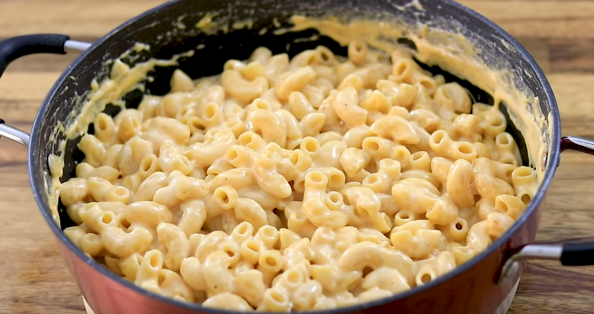

Easy 3-Ingredient Mac and Cheese Recipe (One Pot)

I have tried many other Mac and Cheese recipes and found that the simpler the recipe..
..the better. Very easy to make
Ingredients:
- 4 cups (1 liter) Milk
- 12oz (340g) Pasta (any noodle will do)
- 7oz (200g) Cheddar cheese, shredded(any cheese you want, you are going to want to shred it yourself)
- 1 teaspoon Salt
- 1/4 teaspoon Black pepper
- 1/4 teaspoon Paprika
Directions:
- In a large pot, bring milk to a boil. (CAREFUL NOT TO BURN MILK, MED-LOW HEAT AND STIR)
- Reduce to medium-low heat, add macaroni, black pepper, and paprika and cook, stirring frequently, until the pasta is cooked, about 12 minutes.
- Remove from heat, add the cheese and stir until melted and incorporated.
- Serve OR let cool and grease large pan and put pasta in there for oven later
Youtube video link of recipe